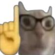

← Back to Portfolio

Nerd Cat
Intellectual feline with attitude - WeLL aKsHuALLy
About This Project
Nerd Cat embodies the know-it-all personality we've all encountered. With glasses perched perfectly and an expression that says "Well, actually...", this design captures the essence of feline intellectualism with a humorous twist.
This character was created for the internet's cat-loving community who appreciate cats with personality. Perfect for memes, reaction images, and anyone who's ever had a cat judge their life choices.
Design Process
- Concept: Combined nerdy aesthetics with feline superiority
- Accessories: Added glasses and smart expression details
- Personality: Captured that "I know better than you" vibe
- Final Polish: Refined details for maximum relatability
Download Files
Photoshop File
12.4 MB
3000 × 3000 px • RGB • Layered
High-Res PNG
2.8 MB
3000 × 3000 px • Transparent
Optimized JPG
1.2 MB
3000 × 3000 px • RGB
📄 License
Free for personal use. Commercial use requires attribution.